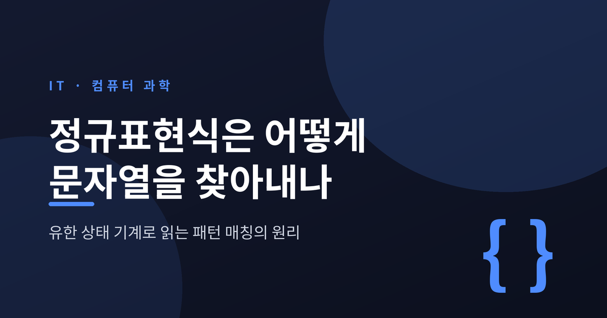
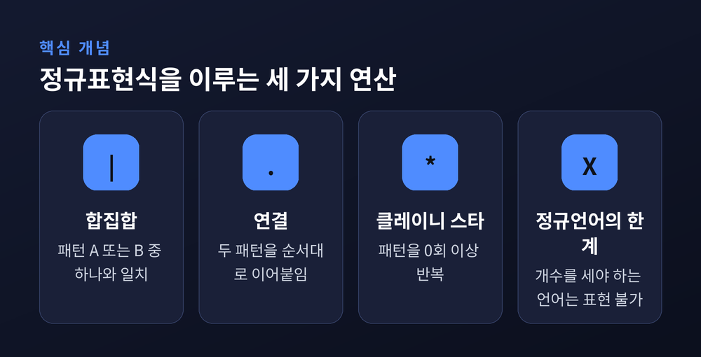
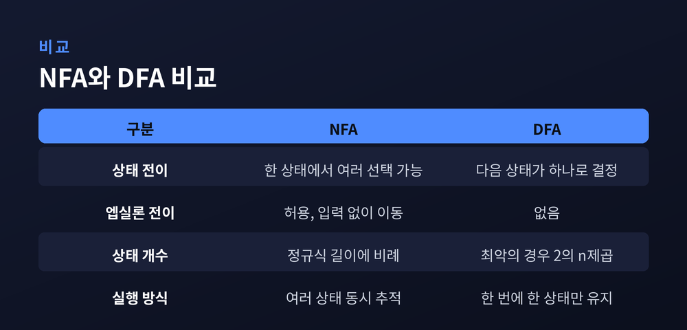
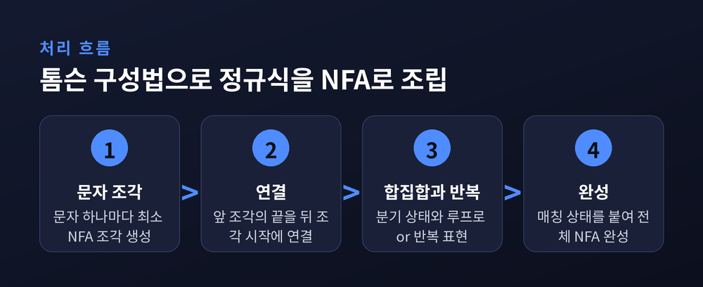
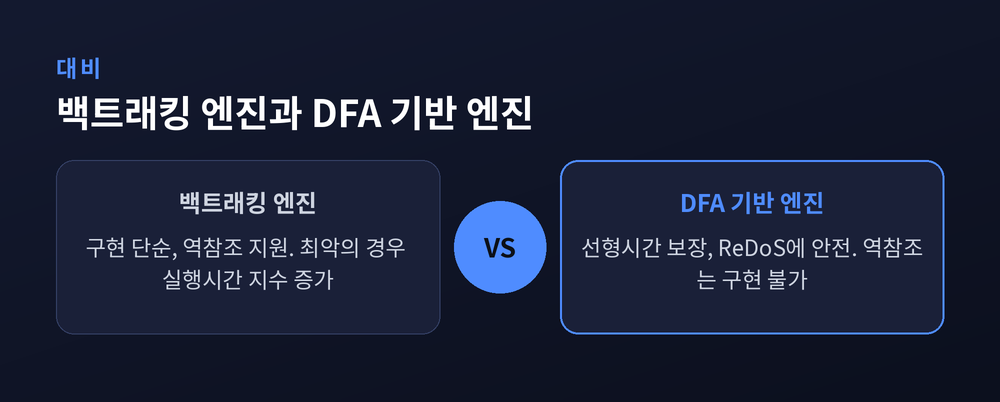
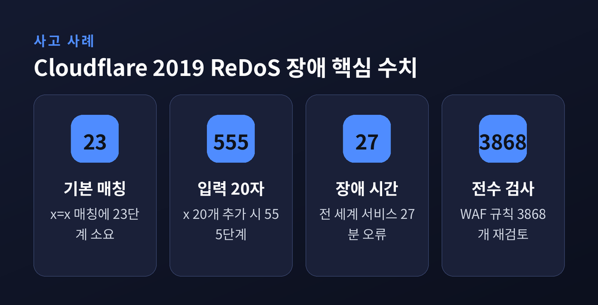

오늘은 정규표현식이 문자열을 찾아내는 원리를 정리해 보려 합니다. a?a?aa처럼 별것 아닌 패턴 하나가 왜 어떤 엔진에서는 순식간에 끝나고, 어떤 엔진에서는 서버 전체를 멈춰 세우는지, 그 답은 정규표현식 밑바닥에 깔린 유한 상태 기계에 있습니다.
정규표현식(regular expression)이라는 이름은 장식이 아닙니다. 1951년 수학자 스티븐 클레이니가 처음 정식화한 "정규언어(regular language)"라는 개념을 코드로 옮겨놓은 것이 정규표현식입니다.
정규언어는 딱 세 가지 연산만으로 만들어집니다. 문자를 이어 붙이는 연결(concatenation), 여러 패턴 중 하나를 고르는 합집합(|), 그리고 0회 이상 반복을 뜻하는 클레이니 스타(*)입니다. ab*나 (ab)|(cd) 같은 표현이 전부 이 세 연산의 조합입니다.
여기서 흥미로운 지점이 하나 있습니다. 정규언어로는 표현할 수 없는 언어도 있습니다. 예를 들어 "a를 n번 쓰고 그다음 b를 정확히 n번 쓴 문자열"(a^n b^n) 같은 집합은 정규언어가 아닙니다. 유한한 상태 몇 개만으로는 "지금까지 a가 몇 개 나왔는지"를 끝없이 셀 수 없기 때문입니다. 이 한계가 뒤에서 다룰 역참조 문제와 그대로 연결됩니다.
클레이니의 정리는 이렇게 요약됩니다. 정규표현식이 나타내는 언어, NFA가 인식하는 언어, DFA가 인식하는 언어는 정확히 같은 집합이라는 것입니다. 세 가지는 겉모습만 다를 뿐 표현력은 완전히 같습니다.

유한 상태 기계는 상태(state)와 상태 사이를 잇는 화살표(전이)로 이루어집니다. 문자를 하나 읽을 때마다 화살표를 따라 다음 상태로 이동합니다.
DFA(결정적 유한 오토마타)는 이름 그대로 결정되어 있습니다. 어떤 상태에서 특정 문자가 들어오면 다음 상태는 딱 하나로 정해집니다. 반면 NFA(비결정적 유한 오토마타)는 같은 상태, 같은 문자에 대해 여러 다음 상태로 갈 수 있는 선택지를 허용합니다. 입력 문자 없이 이동하는 엡실론(ε) 전이도 가질 수 있습니다.
a(bb)+a를 예로 들면, 상태 하나에서 b를 읽었을 때 "bb 반복을 한 번 더 노릴지" 아니면 "이제 마지막 a를 기다릴지" 갈림길이 생깁니다. 미래를 미리 볼 수 없는 기계 입장에서는 이 갈림길이 곧 비결정성입니다.
신기한 점은 NFA와 DFA가 표현력에서는 동등하다는 사실입니다. 어떤 NFA가 있든, 그와 똑같은 언어를 인식하는 DFA를 항상 만들 수 있습니다. 이를 증명한 것이 부분집합 구성법(subset construction)이며, 1959년 마이클 라빈과 데이나 스콧이 제시했습니다. 두 사람은 이 업적으로 1976년 튜링상을 받았습니다.
원리는 단순합니다. DFA의 한 상태를 "NFA 상태들의 집합"으로 통째로 정의하는 것입니다. 문자를 하나 읽을 때마다, 지금 집합에 속한 모든 NFA 상태에서 그 문자로 갈 수 있는 상태들을 전부 모아 새로운 집합(=새로운 DFA 상태)을 만듭니다. 다만 대가도 있습니다. NFA 상태가 n개면 이론상 DFA 상태는 최대 2ⁿ개까지 늘어날 수 있습니다. 실제로는 도달 불가능한 조합이 많아 훨씬 적게 끝나는 경우가 대부분이지만, 최악의 경우 상태 수가 지수적으로 불어난다는 점은 분명한 한계입니다.

정규표현식을 실제 기계(NFA)로 바꾸는 표준적인 방법이 톰슨 구성법(Thompson's construction)입니다. 켄 톰슨이 1968년 ACM 학회지에 발표한 방식으로, 이후 유닉스 계열 도구(grep, awk, egrep, lex)의 뿌리가 되었습니다.
방식은 상향식입니다. 정규식을 잘게 쪼갠 부분식마다 작은 NFA 조각을 만들고, 연산자를 만날 때마다 그 조각들을 규칙대로 이어 붙입니다.
a)는 화살표 하나짜리 최소 조각이 됩니다.e1e2)은 e1 조각의 끝을 e2 조각의 시작에 이어 붙입니다.e1|e2)은 새 시작 상태를 만들어 두 조각 중 하나를 ε-전이로 고르게 합니다.e*는 e 조각을 통과한 뒤 다시 처음으로 되돌아가는 루프를 ε-전이로 추가합니다.e+는 e를 한 번은 반드시 통과시키고, 그 뒤에 같은 루프를 붙입니다.이 방식의 장점은 상태 수가 정규식 길이에 정확히 비례한다는 것입니다. 문자나 연산자 하나당 상태 하나 정도만 추가되므로, 아무리 복잡한 정규식이라도 NFA 크기가 폭발하지 않습니다. 앞서 본 부분집합 구성법에서 DFA 상태가 지수적으로 늘어날 수 있는 것과는 대조적인 지점입니다.

여기서부터가 실무에서 진짜 중요한 부분입니다. NFA를 실제로 "실행"하는 방법은 두 가지로 갈립니다.
백트래킹 방식은 여러 선택지 중 하나를 일단 시도하고, 실패하면 되돌아가 다른 선택지를 시도합니다. 구현이 간단하고 캡처 그룹, 역참조 같은 기능을 붙이기 쉽습니다. Perl, PCRE, Python, Ruby, Java의 기본 정규식 엔진이 모두 이 방식입니다. 문제는 최악의 경우 실행 경로가 지수적으로 늘어난다는 점입니다.
병렬 시뮬레이션 방식(톰슨 NFA 시뮬레이션)은 "여러 상태에 동시에 있다"는 비결정성을 그대로 흉내 냅니다. 문자 하나를 읽을 때마다 현재 있을 수 있는 모든 상태를 한꺼번에 갱신합니다. 상태 집합의 크기가 NFA 상태 수를 넘지 않으므로, 정규식 길이 m과 텍스트 길이 n에 대해 O(mn), 사실상 선형 시간이 보장됩니다. 구글이 만든 RE2 엔진이 이 계열의 대표 주자로, "한 번에 오직 한 상태에만 있는" DFA를 지연 생성하며 O(N) 매칭을 보장합니다.
실측 차이는 극단적입니다. 러스 콕스(Russ Cox)의 2007년 실험에서, a?를 n번 반복한 뒤 a를 n번 반복하는 패턴으로 길이 n짜리 a 문자열을 매칭시켰을 때, Perl은 29글자 매칭에 60초 넘게 걸렸지만 톰슨 NFA 구현은 같은 작업을 20마이크로초 만에 끝냈습니다. 100자로 늘리면 톰슨 방식은 200마이크로초 이내지만, Perl 방식은 이론상 10의 15제곱 년이 걸립니다.
다만 DFA 기반 엔진에도 분명한 한계가 있습니다. "지금 어떤 상태 집합에 있는지"만 추적할 뿐 "어떤 경로로 왔는지"는 기억하지 않기 때문에, 뒤에서 설명할 역참조 같은 기능은 구현할 수 없습니다. 그래서 PCRE 같은 라이브러리는 여전히 백트래킹을 기본으로 두고, RE2는 대신 역참조를 지원하지 않는 길을 택했습니다. 속도와 표현력, 둘 중 하나를 완전히 포기하지 않고서는 얻을 수 없는 트레이드오프인 셈입니다.

정규식 괄호 ( )로 무언가를 캡처해두고, \1 \2처럼 그 캡처된 문자열을 다시 참조하는 것이 역참조(backreference)입니다. (cat|dog)\1은 catcat이나 dogdog는 매칭하지만 catdog는 매칭하지 않습니다.
문제는 이 기능이 이론적으로는 더 이상 정규표현식이 아니라는 점입니다. (a|b)* 부분을 x라는 변수에 저장했다가 뒤에서 그대로 다시 요구하는 패턴은, "앞부분과 뒷부분이 글자 하나까지 완전히 같은 문자열이어야 한다"는 조건을 표현합니다. 이는 앞서 본 a^n b^n 문제와 본질이 같습니다. 유한한 상태 수로는 임의 길이의 문자열을 통째로 "기억"할 수 없기 때문입니다.
더 심각한 것은 계산 복잡도입니다. 역참조를 포함한 정규식의 매칭 문제는 NP-완전임이 증명되어 있습니다. 그래프 3-채색 문제나 3-SAT 문제를 정규식 매칭으로 환원하는 방식으로 증명되었습니다. 러스 콕스는 이를 이렇게 정리합니다. "지금까지 아무도 역참조 포함 정규식을 효율적으로 구현하는 방법을 모른다. 누군가 다항 시간 알고리즘을 찾아낸다면, 그것은 P=NP 증명과 직결되는 사건이 될 것입니다." 실무 엔진들이 역참조 앞에서는 백트래킹으로 되돌아갈 수밖에 없는 이유가 여기에 있습니다.
2019년 7월 2일, 이 이론이 그저 이론으로 끝나지 않는다는 것을 전 세계가 확인했습니다. Cloudflare가 자사 웹 방화벽(WAF)에 XSS 탐지용 정규식 규칙 하나를 전 세계 엣지 서버에 동시 배포했는데, 이 정규식이 과도한 백트래킹을 일으켜 CPU를 거의 100%까지 끌어올렸습니다. 그 결과 Discord, Medium, Shopify를 비롯한 수많은 사이트가 27분간 502 오류를 냈습니다.
문제가 된 패턴의 핵심부는 .*.*=.*로 단순화할 수 있습니다. Cloudflare가 공식 블로그에서 직접 공개한 수치를 보면 왜 이렇게 됐는지 선명하게 드러납니다. 3글자 문자열 x=x를 매칭하는 데만 23단계가 걸렸습니다. 뒤에 x를 20개 더 붙이면 555단계로 늘어나고, =가 아예 없는 문자열이면 매칭 실패를 확인하는 데만 4,067단계가 필요했습니다. 패턴 끝에 세미콜론 하나만 추가한 .*.*=.*;로 바꾸면 상황은 더 나빠져, 같은 20글자 입력에 5,353단계가 걸렸습니다.
흥미로운 점은, 흔히 쓰는 완화책인 "게으른(lazy) 연산자" .*?로 바꿔도 근본적으로는 해결되지 않았다는 사실입니다. 매칭에 성공하는 경우는 단계 수가 줄어들지만, 애초에 실패하는 입력(치명적 케이스)에 대해서는 게으른 연산자로 바꿔도 단계 수가 전혀 줄지 않습니다.
Cloudflare는 사고 이후 3,868개에 이르는 WAF 규칙 전체를 재검사하고, 최종적으로 RE2 또는 Rust regex 엔진으로 전환하겠다고 발표했습니다. 둘 다 이 글 앞부분에서 설명한 톰슨 NFA·DFA 계열의 선형 시간 보장 엔진입니다. Cloudflare 스스로도 블로그에 "이 문제의 해법은 1968년 켄 톰슨의 논문에 이미 나와 있었다"고 적었습니다.

정리하면 이렇습니다. 정규표현식은 문자열 매칭 도구이기 이전에, 클레이니의 정규언어 이론과 톰슨의 유한 상태 기계 구성법이 그대로 코드로 옮겨진 결과물입니다. 같은 정규식이라도 그것을 실행하는 엔진이 백트래킹이냐 자동자 시뮬레이션이냐에 따라 실행 시간이 마이크로초와 수십 년만큼 벌어질 수 있습니다.
"정규식이 느리다면, 그것은 정규식의 문제가 아니라 엔진이 선택한 실행 전략의 문제일 때가 많습니다." 역참조 없는 평범한 패턴을 쓰고 있다면, 굳이 백트래킹의 위험을 감수할 이유가 없습니다. 다음에 정규식을 쓸 일이 있다면, 그 문자열 뒤에 숨어 있는 작은 기계 하나를 한 번쯤 떠올려 보시길 권합니다.